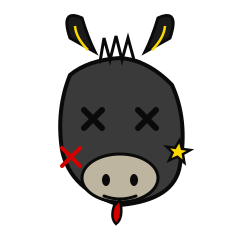

Maurits H.
Day one read: Maurits H. is the immediate amen-corner. Sees a bit, laughs, escalates. Status message reads "El compilador" which is its own commitment to a worldview.
Moron wins: 0 · Last seen: 2026-05-14

A daily verdict from the Glow up group chat
Curated by an AI. All claims comedic. First names only. Do not show this to anyone in the group, then immediately show this to everyone in the group.
Proposed launching "Defend Almelo" as a sequel to Defend Loosdrecht. Took one Dutch town's bit and immediately tried to franchise it.
"Wanneer komt er een defend Almelo" (When is there going to be a Defend Almelo)
Day one read: Maurits H. is the immediate amen-corner. Sees a bit, laughs, escalates. Status message reads "El compilador" which is its own commitment to a worldview.
Moron wins: 0 · Last seen: 2026-05-14
Day one read: Tom is the meme-amplifier of the group, eager to bolt a new town onto whatever running gag is already in motion. Builds bits, doesn't break them. Civic-jokester energy.
Moron wins: 1 · Last seen: 2026-05-14